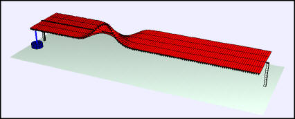

A Gaussian pulse propagating on a Shive wave machine with 64 rods.
The Wave Machine model simulates the wave machine produced by John Shive at Bell Laboratories and made famous by the PSSC Simple Waves film. The machine consists of n horizontal bars with moment of inertia In welded to a torsion rod that is perpendicular to the bars. The simulation allows the user to change the lengths of the bars, thereby simulating the effect of a wave propagating in a non-uniform medium. The default bar of length L=2 has a moment of inertia of one. The maximum allowed bar length is 4 giving a moment of inertia of 4 and the minimum allowed length is 1/2 giving a moment of inertia of 1/16.
Twisting a bar about the torsion rod causes the bar to oscillate because the rod produces a restoring torque. Because a bar twist acts on neighboring bars, the motions are coupled and a traveling wave results. The speed of the wave depends on the torsional coupling between bars k and the moments of inertia of the bars. A damping force can also be added using the model's damping parameter b.
The simulation allows various pulse shapes to be sent down the machine by twisting the first rod with the desired functional form or by dragging the first rod. For example, applying a Gaussian twist produces a Gaussian traveling pulse but the width of this pulse depends on the wave speed. The far end of the wave machine can be free or clamped and this changes the nature of the reflected wave.
Theoretical note: The pulse shape will distort as the wave propagates on the wave machine because of dispersion effects. This distortion is most apparent as the wavelength (or pulse width) approaches the rod separation. Use the Driven Wave Machine model to explore dispersion these effects.
The Wave Machine model is distributed as a ready-to-run (compiled) Java archive. Double clicking the ejs_mech_osc_chains_WaveMachine.jar file will run the program if Java is installed. Other coupled oscillator models are available. They can be found by searching the OSP Collection for coupled oscillations.
"Standing waves in a non-uniform medium," Paul Gluck, The Physics Teacher, (in press).
"Making waves: A classroom torsional wave machine (Part I)," Kenneth D. Skeldon, Janet E. Milne, Alastair I. Grant, and David A. Palmer Phys. Teach. 36, 392 (1998)
"Making waves: A classroom torsional wave machine (Part II)," Kenneth D. Skeldon, Janet E. Milne, Alastair I. Grant, and David A. Palmer Phys. Teach. 36, 466 (1998)
University of Maryland Physics Lecture-Demonstration website section G3 http://www.physics.umd.edu/lecdem/services/demos/demosg3/demosg3.htm
Similarities in wave behavior, John N. Shive, Bell Telephone Laboratories (1961). See also Am. J. of Physics 32, p572 (1964).
The Wave Machine model was created by Wolfgang Christian using the Easy Java Simulations (EJS) version 4.3 authoring and modeling tool created by Francisco Esquembre.
You can examine and modify this compiled EJS model if you run the model (double click on the model's jar file), right-click within a plot, and select "Open EJS Model" from the pop-up menu. You must, of course, have EJS installed on your computer. Information about EJS is available at: <http://www.um.es/fem/Ejs/> and in the OSP ComPADRE collection <http://www.compadre.org/OSP/>.